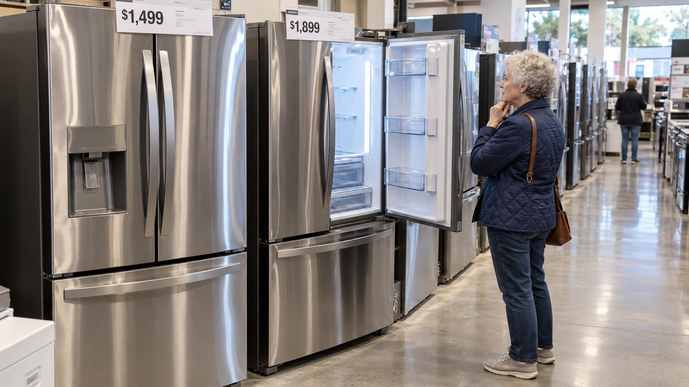

US consumer mood stays near a historic low as inflation fears rise
October’s final Michigan survey shows weaker buying conditions for big-ticket goods and rising inflation expectations despite resilient business activity.

American consumers entered the final stretch before the midterm elections with confidence still near a historic low and growing concern about inflation, even as businesses continued to report solid activity. The University of Michigan's final October survey, released Friday, showed that an almost unchanged headline concealed a sharper deterioration in views about major purchases.
The sentiment index stood at 48.0, barely below September's 48.1. Current economic conditions fell to 46.7 from 50.9, while the expectations index rose to 48.8 from 46.3. Those opposing movements explain why the overall reading moved so little. The headline offers evidence of stabilization at a weak level, rather than a broad improvement in household finances.
Big-ticket purchases are becoming harder to justify
Survey director Joanne Hsu attributed the entire decline in current conditions to the buying climate for durable goods, which dropped 18%. Higher interest rates and affordability concerns were central to the deterioration. Appliances, vehicles and other expensive purchases create a particular strain because households must assess both the price and the cost of financing it.
A household can remain employed and continue paying for essentials while postponing a refrigerator or car. That makes purchase intentions relevant to retailers, manufacturers and lenders without turning them into a direct forecast of sales. The distinction is central to how consumer sentiment should be interpreted: a survey measures attitudes, whereas spending data record transactions that have actually occurred.
The difference also matters within the retail sector. A customer delaying an appliance may continue buying groceries, repairing an older product or looking for a cheaper substitute. Weak sentiment therefore need not affect every business equally. Retail earnings and customer mix can help establish where those choices are showing up in company results.
Inflation expectations are moving in the wrong direction
Consumers expected 4.7% inflation over the next year, up from 4.6% in September. Longer-run expectations increased to 3.5% from 3.4%. Both measures rose for a second consecutive month. These are respondents' expectations, not a forecast endorsed by the Federal Reserve and not a measurement of the inflation rate already recorded in government statistics.
The university accompanied the release with a separate report examining the risk that higher expectations become entrenched. Hsu's analysis argues that repeated shocks can change how people think about future prices. Its comparisons use historical web interviews to make the recent and earlier survey readings methodologically consistent, an important qualification when assessing changes across collection methods.
The report identifies a possible feedback loop: consumers who anticipate higher prices may bring purchases forward, supporting demand and making disinflation harder. It presents that mechanism as a risk, not an inevitable outcome or proof that all current spending is precautionary. A person buying early to avoid another increase can sound pessimistic in a survey while still adding to today's sales.
Household frustration and business growth can coexist
A separate S&P Global flash survey Friday put October's US composite business-activity index at 57.6, down from 58.4 in September but still comfortably above the 50 expansion threshold, Reuters reported. Its output-price gauge rose to 59.8 from 58.4. That combination offers a contrasting view: businesses were still expanding while selling-price pressures intensified.
The two surveys cover different respondents and different questions. Business activity can strengthen because customers continue buying, inventories rise or investment remains robust. None of those developments automatically restores purchasing power for a household that has watched necessities become more expensive. Slower inflation would mean prices rising less quickly; it would not, by itself, reverse the earlier increases.
For monetary policy, that leaves an uncomfortable balance. Higher borrowing costs can discourage discretionary purchases, but persistent expectations of rising prices can complicate efforts to cool inflation. For companies, the useful test is whether pricing power offsets weaker volumes and financing-sensitive demand. Second-round inflation effects explain how an initial shock can spread beyond its original source. Friday's survey shows why a steady confidence headline offers limited reassurance on that question.
Sources and methodology
Sources checked October 23, 2026. Reported findings and company or regulatory statements are attributed in the text; discussion of financial implications is editorial analysis. The generated cover is illustrative.